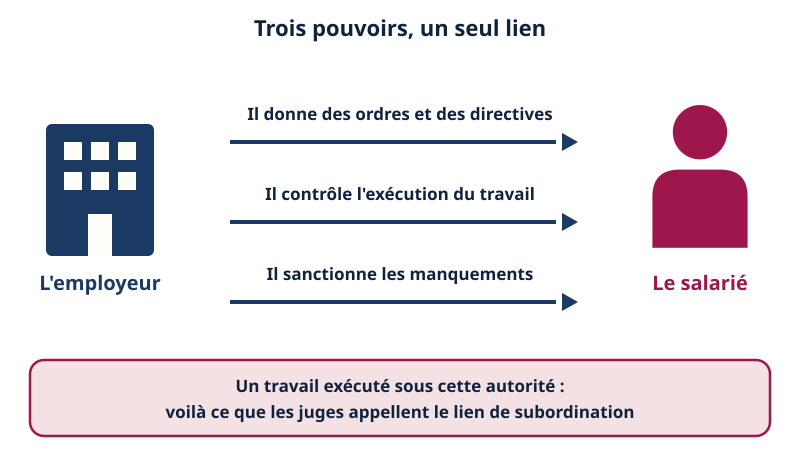
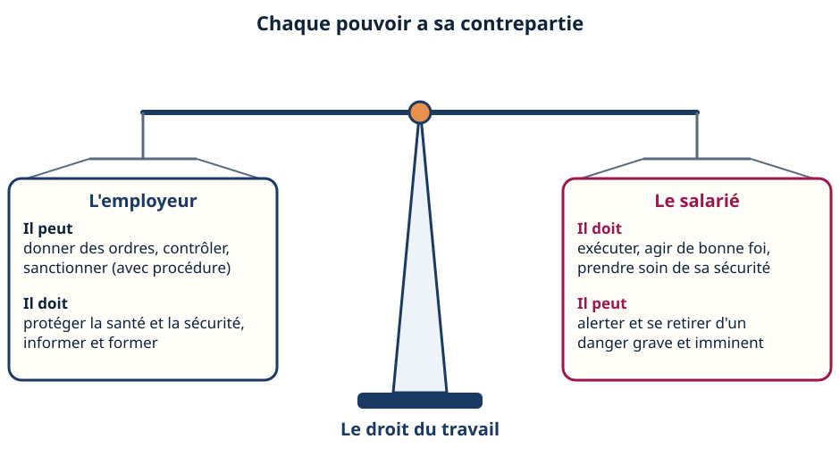
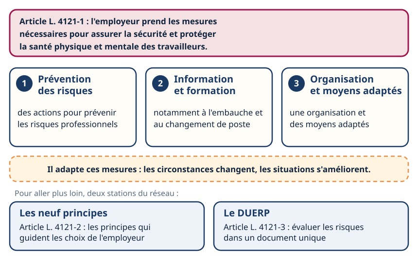
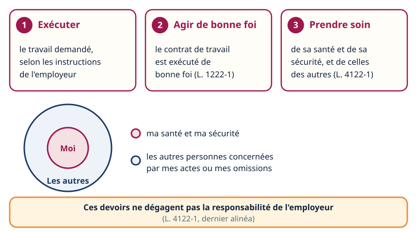
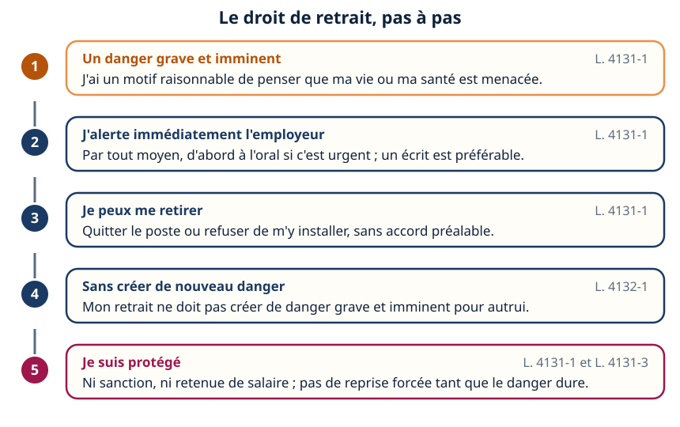
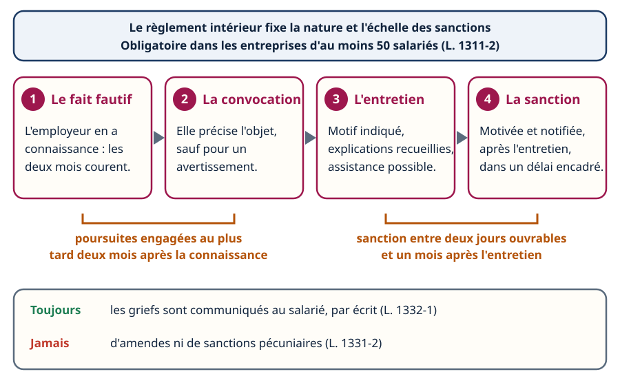
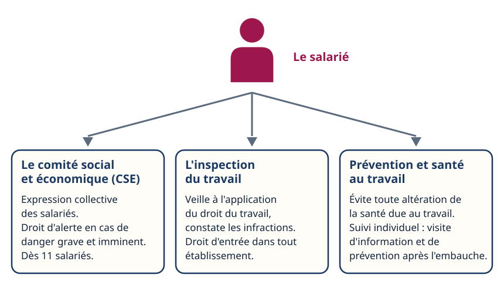
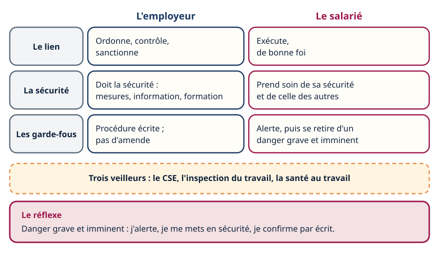

Droit du travail · niveau BTS
Droits & devoirs — employeur, salarié
Mini-station commentée · 8 écrans et 4 questions · environ 10 minutes
À la fin de la station, vous savez dire ce qui fonde l'autorité de l'employeur (le lien de subordination) et ce qu'il doit en retour (la sécurité), quels sont les devoirs du salarié, comment on exerce le droit d'alerte et de retrait, ce que la discipline permet et interdit, et vers qui se tourner : CSE, inspection du travail, santé au travail.
Référentiel : TP TECVC, REAC TP-00133 — hors REAC : culture professionnelle du technicien et du chargé d'affaires. Aucune des compétences CP1 à CP10 ne porte sur le droit du travail ; cette station sert le futur salarié que vous êtes déjà.
Chaque écran peut être expliqué à voix haute : le bouton « Écouter » commente ce que vous voyez. Rien n'est dit qui ne soit aussi écrit.
Écran 1 sur 8
Le lien de subordination : ce qui fait un salarié
Ce qui lie un salarié à son employeur, c'est le lien de subordination. La Cour de cassation (chambre sociale, 13 novembre 1996) le définit ainsi : l'exécution d'un travail sous l'autorité d'un employeur qui a le pouvoir de donner des ordres et des directives, d'en contrôler l'exécution et de sanctionner les manquements de son subordonné.
Trois pouvoirs, donc : ordonner, contrôler, sanctionner. C'est le point de départ de la station : parce que l'employeur commande, il doit protéger ; parce que le salarié obéit, il a des devoirs — et des droits pour ne pas subir. Le contrat dans lequel naît ce lien est traité dans la station Le contrat.

Écran 2 sur 8
La balance : chaque pouvoir a sa contrepartie
Le droit du travail n'est pas une obéissance sans limite. À chaque pouvoir de l'employeur répond une obligation ; à chaque devoir du salarié répond un droit.
- L'employeur peut ordonner, contrôler, sanctionner — mais il doit la sécurité (L. 4121-1), l'information et la formation à la sécurité (L. 4141-1 et L. 4141-2), et une procédure avant toute sanction (L. 1332-1 et suivants).
- Le salarié doit exécuter, agir de bonne foi (L. 1222-1) et prendre soin de sa sécurité et de celle des autres (L. 4122-1) — mais il peut alerter et se retirer d'un danger grave et imminent (L. 4131-1), sans sanction (L. 4131-3).
Ce qui compte n'est pas que les deux plateaux pèsent pareil, mais qu'ils tiennent ensemble : un employeur qui commande sans protéger, ou un salarié qui obéit sans jamais pouvoir dire non à un danger, sortent de l'équilibre.

Écran 3 sur 8
L'obligation de sécurité : ce que l'employeur doit
Article L. 4121-1 : « L'employeur prend les mesures nécessaires pour assurer la sécurité et protéger la santé physique et mentale des travailleurs. » Ces mesures comprennent :
- des actions de prévention des risques professionnels ;
- des actions d'information et de formation ;
- la mise en place d'une organisation et de moyens adaptés.
L'employeur adapte ces mesures pour tenir compte du changement des circonstances et tendre à l'amélioration des situations existantes. La formation à la sécurité est pratique et appropriée, notamment pour les travailleurs qu'il embauche et ceux qui changent de poste de travail ou de technique (L. 4141-2).
Ses choix suivent les neuf principes généraux de prévention (L. 4121-2) — voir la station Les neuf principes. Et il évalue les risques (L. 4121-3) : c'est le document unique d'évaluation des risques professionnels (DUERP), sur lequel le comité social et économique (CSE) est consulté — voir la station Le DUERP.

Écran 4 sur 8
Les devoirs du salarié
Article L. 4122-1 : conformément aux instructions de l'employeur, il incombe à chaque travailleur de prendre soin, en fonction de sa formation et selon ses possibilités, de sa santé et de sa sécurité ainsi que de celles des autres personnes concernées par ses actes ou ses omissions au travail.
- Exécuter le travail selon les instructions de l'employeur. Elles précisent, quand la nature des risques le justifie, les conditions d'utilisation des équipements de travail, des moyens de protection et des substances dangereuses, et elles sont adaptées aux tâches (L. 4122-1).
- Agir de bonne foi : « le contrat de travail est exécuté de bonne foi » (L. 1222-1). C'est l'assise de ce que l'on appelle la loyauté envers l'employeur.
- Prendre soin de sa sécurité et de celle des autres.
Ces devoirs sont sans incidence sur le principe de la responsabilité de l'employeur (L. 4122-1, dernier alinéa) : demander à chacun de faire attention ne dispense jamais l'employeur de ses propres mesures.
Exemple de terrain : les opérations sur les installations électriques ou dans leur voisinage ne peuvent être effectuées que par des travailleurs habilités (R. 4544-9), et l'habilitation est délivrée par l'employeur, qui s'assure d'abord de la formation (R. 4544-10). Voir la station L'habilitation.

Écran 5 sur 8
Le droit d'alerte et de retrait : pas à pas
Article L. 4131-1 : le travailleur alerte immédiatement l'employeur de toute situation de travail dont il a un motif raisonnable de penser qu'elle présente un danger grave et imminent pour sa vie ou sa santé, ainsi que de toute défectuosité qu'il constate dans les systèmes de protection. Il peut se retirer d'une telle situation.
- Le motif est raisonnable quand une menace sérieuse existe et que la situation appelle une urgence à réagir ; le danger peut être individuel ou collectif (service-public.fr).
- L'information se fait par tout moyen : à l'oral d'abord si c'est urgent ; un écrit est préférable, sans être obligatoire (service-public.fr).
- Le retrait ne doit pas créer pour autrui une nouvelle situation de danger grave et imminent (L. 4132-1).
- Aucune sanction, aucune retenue de salaire contre le travailleur qui s'est retiré avec un motif raisonnable (L. 4131-3). L'employeur ne peut lui demander de reprendre tant que le danger persiste (L. 4131-1).
Limite : si le retrait n'est pas justifié, l'employeur peut retenir sur le salaire le montant correspondant à l'absence ; le salarié peut contester devant le conseil de prud'hommes (service-public.fr). Pourquoi alerter : si le risque signalé se réalise, la faute inexcusable de l'employeur est de droit (L. 4131-4).

Écran 6 sur 8
Règlement intérieur et discipline : le permis et l'interdit
Le règlement intérieur est un document écrit par lequel l'employeur fixe exclusivement : les mesures d'application de la réglementation santé-sécurité (dont les instructions de L. 4122-1) ; les conditions de participation des salariés au rétablissement de conditions de travail protectrices ; les règles générales et permanentes de discipline, dont la nature et l'échelle des sanctions (L. 1321-1). Il est obligatoire dans les entreprises d'au moins 50 salariés (L. 1311-2).
- Ses limites (L. 1321-3) : rien de contraire aux lois, règlements et conventions collectives ; aucune restriction aux droits et libertés qui ne soit justifiée par la nature de la tâche et proportionnée au but ; aucune discrimination. Il est soumis à l'avis du CSE et communiqué à l'inspecteur du travail (L. 1321-4).
- Une sanction est toute mesure, autre que les observations verbales, prise à la suite d'un agissement considéré comme fautif (L. 1331-1).
- La procédure : griefs communiqués par écrit (L. 1332-1) ; convocation à un entretien, sauf avertissement ou sanction de même nature sans incidence sur la présence, la fonction, la carrière ou la rémunération ; assistance d'une personne de l'entreprise ; sanction motivée et notifiée, pas avant deux jours ouvrables ni après un mois suivant l'entretien (L. 1332-2) ; poursuites engagées dans les deux mois de la connaissance du fait, sauf poursuites pénales (L. 1332-4).
- Jamais d'amende ni de sanction pécuniaire : toute stipulation contraire est réputée non écrite (L. 1331-2).

Écran 7 sur 8
Qui veille : CSE, inspection du travail, santé au travail
- Le comité social et économique (CSE) : mis en place dans les entreprises d'au moins onze salariés, mais obligatoire seulement si l'effectif est atteint pendant douze mois consécutifs (L. 2311-2). Il assure l'expression collective des salariés (L. 2312-8), analyse les risques professionnels (L. 2312-9), et un membre de la délégation exerce le droit d'alerte en cas de danger grave et imminent (L. 2312-60) : l'employeur enquête alors immédiatement avec lui (L. 4132-2).
- L'inspection du travail : ses agents sont chargés de veiller à l'application du Code du travail et des autres dispositions relatives au régime du travail, et de constater les infractions ; ils disposent d'une garantie d'indépendance (L. 8112-1). Ils ont un droit d'entrée dans tout établissement concerné ; dans des locaux habités, ils ne peuvent entrer qu'avec l'autorisation des occupants (L. 8113-1).
- Le service de prévention et de santé au travail : sa mission principale est d'éviter toute altération de la santé des travailleurs du fait de leur travail (L. 4622-2). Tout travailleur bénéficie d'un suivi individuel, avec une visite d'information et de prévention après l'embauche ; un décret fixe le délai (L. 4624-1).
Le CSE représente, l'inspection contrôle, le service de santé prévient et suit : trois portes différentes, à ne pas confondre avec l'employeur lui-même.

Écran 8 sur 8
Bilan et le réflexe
- Le lien de subordination : ordonner, contrôler, sanctionner. Il donne à l'employeur ses pouvoirs, et il lui impose des obligations.
- L'employeur doit la sécurité (L. 4121-1) ; le salarié prend soin de la sienne et de celle des autres (L. 4122-1) — sans que cela décharge l'employeur.
- Face à un danger grave et imminent : alerter, puis se retirer ; ni sanction ni retenue de salaire si le motif est raisonnable (L. 4131-1, L. 4131-3).
- La discipline a ses règles : règlement intérieur, procédure écrite, délais, aucune amende.
- Trois veilleurs : CSE, inspection du travail, santé au travail.
Le réflexe : danger grave et imminent — j'alerte, je me mets en sécurité, je confirme par écrit.

Question 1 sur 4
Qu'est-ce qui caractérise le lien de subordination ?
Question 2 sur 4
« Vous devez prendre soin de votre sécurité, donc elle ne me regarde plus », dit le chef d'équipe. Que répond le Code du travail ?
Question 3 sur 4
Un technicien voit un garde-corps absent et pense à un danger grave et imminent. Que fait-il ?
Question 4 sur 4
Un employeur veut sanctionner des retards répétés par une amende retenue sur la paie. Est-ce possible ?
Les correspondances de la station
- Les neuf principes (Risques professionnels) — ce qui guide les mesures que l'employeur doit prendre.
- Le DUERP (Risques professionnels) — l'évaluation des risques, sur laquelle le CSE est consulté.
- Le contrat (même sous-ligne) — l'acte dans lequel naît le lien de subordination.
- L'habilitation (Électrique) — un titre délivré par l'employeur, qui autorise le geste du salarié.